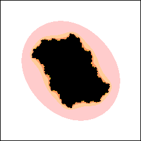
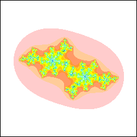

| The number of pieces of a Julia set is severely limited: |
| Dichotomy Theorem The Julia set Jc of z2 + c
is either connected (one piece) or totally disconnected (infinitely many pieces, a
distorted Cantor set). |
|  |
 |
 |
| connected |
|
Cantor set |
|
| This is a consequence of a theorem proved in
1918-19 by Pierre Fatou and Gaston Julia. |
| This theorem contains a cautionary lesson about interpreting computer
graphics. The middle and right pictures are magnifications of the picture to
their left. |
|
| In the third picture we see the filled-in Julia set contains a solid piece, so the Julia set
is not a Cantor set. |
| Consequently, it must be connected. That is, despite appearances, the colorful filaments
contain very small black dots attaching all parts of the Julia set togther. |
| Yet to the eye, the black regions appear to be isolated. |
| In the next section,
we shall see the Dichotomy Theorem is the
foundation of the definition of the Mandelbrot set. |